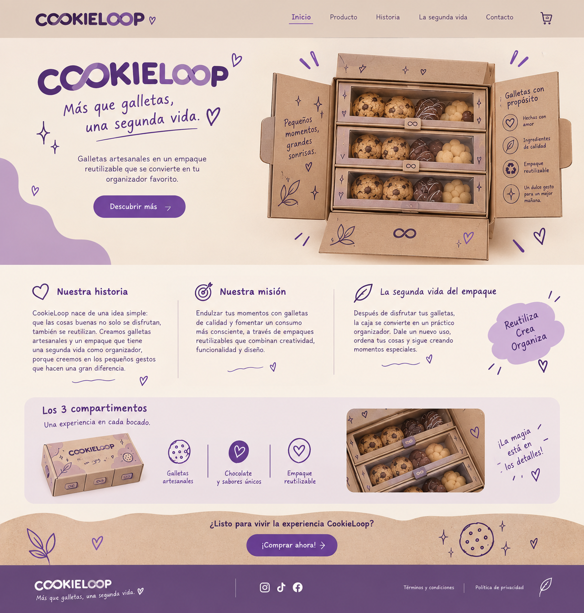

Nuestra historia
CookieLoop nace de una idea simple: que las cosas buenas no solo se disfrutan, también se reutilizan. Creamos galletas artesanales y un empaque que tiene una segunda vida como organizador.
GALLETAS CON PROPÓSITO
Galletas artesanales en un empaque reutilizable que se convierte en tu organizador favorito.
Descubrir más →
CookieLoop nace de una idea simple: que las cosas buenas no solo se disfrutan, también se reutilizan. Creamos galletas artesanales y un empaque que tiene una segunda vida como organizador.
Endulzar tus momentos con galletas de calidad y fomentar un consumo más consciente, a través de un empaque reutilizable que combina creatividad, funcionalidad y diseño.
Después de disfrutar tus galletas, la caja se convierte en un práctico organizador. Dale un nuevo uso, ordena tus cosas y sigue creando momentos especiales.
ReutilizaEL PRODUCTO
Una experiencia en cada bocado.
Ingredientes seleccionados y sabores especiales.
Una selección pensada para compartir y regalar.
La caja continúa siendo útil después del producto.
¿POR QUÉ COOKIELOOP?
La inspiración surgió al pensar que muchos empaques dejan de ser útiles cuando el producto se termina. CookieLoop cambia esa idea: primero protege y presenta las galletas y después puede transformarse en un organizador.
“El ciclo no termina cuando se terminan las galletas.”
LA SEGUNDA VIDA
Descubre la presentación y los tres compartimentos.
Comparte tus galletas favoritas.
Conserva el empaque y dale un nuevo propósito.
Guarda lápices, accesorios y pequeños objetos.
ESTILO VISUAL
La propuesta utiliza el tono natural del cartón como base y pequeños detalles en morado y lavanda. Las ilustraciones son sencillas para que puedan pintarse o reproducirse fácilmente a mano.
Decoración sencilla:
corazones · estrellas · hojitas · galletas · líneas curvas
COOKIELOOP
Más que galletas, una segunda vida.
Proyecto académico · Diseño de producto y empaque